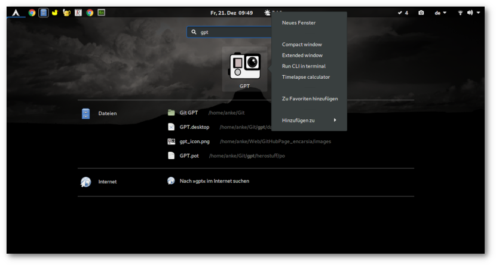

Mediaplayer mit GStreamer (Edition gtksink)
Inhalt
Mediaplayer mit GStreamer
Im einführenden Artikel zu Mediaplayer mit GStreamer werden Probleme beschrieben, die auf die Verwendung von "xvimagesink" als Videosink zurückzuführen sind.
In diesem Artikel wird als Alternative der Videosink "gtksink" verwendet und nur auf die Unterschiede zu "xvimagesink" eingegangen, da die weitere Vorgehensweise identisch ist.
Installation
Gtksink war ursprünglich Teil der "bad" plugins, befindet sich aber seit der GStreamer-Version 1.14 in den "good" plugins, die im Normalfall bei der Installation von GStreamer mitinstalliert werden.
Eine Ausnahme bildet Ubuntu, wo das Plugin separat im Paket gstreamer1.0-gtk3 (universe) zur Verfügung steht.
Glade
Der Darstellungsbereich der Mediendatei wird durch das gtksink-eigene Widget bereitgestellt. Da dies nicht in Glade verfügbar ist, wird ein leeres Containerwidget (Gtk.Box) benötigt, in das das Widget platziert werden kann.
Python
Videosink einrichten
self.sink = Gst.ElementFactory.make("gtksink")
Widget einrichten
video_widget = self.sink.get_property("widget") builder.get_object("video_box").add(video_widget)
GNOME-Anwendungsstarter
Inhalt
Anwendungsstarter in GNOME
Anwendungsstarter in GNOME und anderen Desktopumgebungen werden mit Desktopeinträgen in Form von Textdateien mit der Endung "desktop" realisiert.
Speicherort
Der Speicherort von .desktop-Dateien richtet sich nach den Freedesktop-Spezifikationen. Desktop-Dateien befinden sich in $XDG_DATA_DIRS/appications, also normalerweise in den Verzeichnissen
~/.local/share/applications /usr/local/share/applications /usr/share/applications
und werden in dieser Reihenfolge durchsucht. Alle Dateien in diesen Verzeichnissen werden in der GNOME-Shell-Übersicht bzw. der Suche berücksichtigt.
Minimalkonfiguration
Ein funktionierender Desktopeintrag muss mindestens die drei folgenden Attribute enthalten:
[Desktop Entry] Name=Application name Exec=python path/to/script.py Type=Application
WM_CLASS
Die WM_CLASS-Eigenschaft wird von X-Windowmanager-Systemen zur Zuordnung zwischen Anwendung und Windowmanager verwendet.
Fehlt diese Zuordnung, wird der Programmname nicht in der Topbar dargestellt, in der Seitenleiste wird das Programm nicht als Instanz angesehen, wenn es als Favorit markiert ist sondern separat und die Anwendung kann nicht von der Übersicht aus als Favorit gespeichert werden.
.desktop
In der Desktopdatei muss das Attribut StartupWMClass definiert werden.
Um die WM_CLASS-Bezeichnung eines Fensters herauszufinden, kann man in einem Terminal
$ xprop | grep WM_CLASS
aufrufen und das gewünschte Fenster anklicken.
Gtk+-Python-Anwendung
Setzt man den Programmnamen mit der Funktion GLib.set_prgname("appname"), so entspricht dies dem Attribut WM_CLASS. In der Desktopdatei muss demzufolge StartupWMClass=appname definiert sein.
Die bisher für diese Aufgabe verwendete Funktion set_wmclass(wmclass_name, wmclass_class) von Gtk.Window ist seit Version 3.22 veraltet. Sie funktioniert zwar noch, sollte aber nicht mehr verwendet werden.
Nützliche Attribute
- Path
-
Arbeitsverzeichnis des Programms. So kann zum Beispiel die Exec-Zeile verkürzt bzw. übersichtlicher gestaltet werden:
- Icon
- Mit Icons verhält es sich ähnlich zu Desktop-Dateien, sie werden zunächst in``$XDG_DATA_DIRS/icons`` vermutet, können aber auch als absoluter Pfad angegeben werden.
- Keywords
- Da es mit der GNOME-Shell kein klassisches Anwendungsstartermenü mehr gibt, ist es hilfreich, wenn ein Programm unter verschiedenen Stichworten und nicht nur unter Name selbst in der Startersuche gefunden werden kann. Die Stichwörter werden als semikolonseparierte Strings angegeben.
- Categories
- Hier kann man Kategorien für die Einsortierung in Menüs angeben.
Zusätzliche Programmaktionen
Desktopeinträge können sogenannte Aktionen enthalten, die zusätzliche Wege enthalten, Anwendungen zu starten. Diese werden als Untermenüs in Form von "Quicklists" oder "Jumplists" dargestellt.
Im Desktopeintrag wird das Attribut Actions angelegt, diese Actions werden innerhalb der Datei darunter in "Desktop Action"-Abschnitten definiert:
[Desktop Entry] ... Actions=option1;option2; [Desktop Action option1] Name=Start with Option 1 Exec=python run.py --option1 [Desktop Action option2] Name=Start with Option 2 Exec=python run.py --option2

Zusätzliche Anwendungsstarter von GPT
GPT: v0.5 release
Inhalt
It has been a while since I have taken some care of my tool to manage my GoPro footage with but it has gotten some attention so I could not just abandon it without losing my face so here we are...
Intro
When I first noticed, without much surprise, that there is no official GoPro desktop client for Linux, I wrote a bash script to automatically rename the files. Second step was converting this into a python script with a simple text based menu. In a weak moment of delusions of grandeur I decided to dive into GUI programming and use this application as my personal guinea pig.
Download
First things first: the result of my efforts can be downloaded from the Git repository:
- archive of the official v0.5 release "rubula infans"
- download or clone the repo from encarsia/gpt
Bemerkung
If you have cloned the repo sometime in the past and haven't altered anything I recommend to delete and clone again because there may be conflicts caused by a force push because I cannot git.
We've come a long way, baby
Icon
First things first: we have an icon. This is my way of coping with pedantry and an attempt to keep up the illusion of competence. I found it at The Noun Project.
GtkApplication
The application now runs as generic Gtk.Application which includes
- starting/faving from the GNOME shell
- identify/kill the process by name (no more random "Python" task)
- commandline options are available
- cleaner code, p.e. avoid starting the main loop manually
Application window
Since v0.3 there is a second main application window available with media data information and a preview widget realized with GStreamer.
These two windows are now merged into one providing a StackSwitcher to switch between these alternative views. This now is the default application window.
Not convinced to drop the "single view" windows I decided to keep them for now. You can launch the application using by executing the run script passing one of these options:
$ # compact/list view $ python run.py -c $ python run.py --alt-gui-compact $ # preview window $ python run.py -e $ python run.py --alt-gui-ext
If you want to use the old commandline interface, you can do so by running
$ python run.py --cli
Run the script with --help option to show all available options.
Fixed issues
- importing from "other" places should do as planned now
- the GStreamer preview now uses the gtksink playbin (this story may be told another time)
- timelapse generation should not freeze the main loop
Burn the widge(t)
- I replaced several widgets for modern looks and better desktop integration:
- all dialogs are Gtk.MessageDialogs now
- the dropdown menu is a Gtk.PopoverMenu instead of a Gtk.Menu
Logs and configuration
The output of logging and the configuration file have moved to ~/.config/gpt. You may have to set your working directory again if you have used GPT before.
Installation
Dependencies
That'll do on Archlinux and derivates:
$ sudo pacman -S python-gobject python-yaml python-setuptools python-lxml python-setproctitle mediainfo ffmpeg
And that on Ubuntu:
$ sudo apt-get install python3-gi python3-setuptools python3-lxml gir1.2-gtk-3.0 gir1.2-gstreamer-1.0 gstreamer1.0-gtk3 mediainfo ffmpeg
Setuptools
The application can be installed by using setuptools. After downloading or cloning the repository run
$ python setup.py install --user # or $ sudo python setup.py install
Desktop file
Setuptools will also install a desktop file so you can launch GPT from the GNOME shell or menu. All alternative interface options are available via desktop action so you can start these on right click from the activities overview or dash if GPT is running or added as favourite.
Bits and pieces
- code improvements (formatting, readability, PEP8 compliance, removal of deprecated code, file structure)
- updated and detailed README
- updated localization files
Consult the README for details.